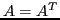

While there is no lack of high-quality Krylov subspace solvers for (complex) Hermitian systems, there are few for complex symmetric systems, which have become increasingly important in modern applications including quantum dynamics, electromagnetics, power systems, and many more.
For a large consistent complex symmetric system  , i.e.,
, i.e.,

, one may apply a non-Hermitian Krylov subspace method such as BiCG, CGS, or GMRES, overlooking the symmetry ofWe describe CS-MINRES, a new algorithm for solving linear systems and least-squares problems with complex symmetric coefficient matrices. In all cases, CS-MINRES computes the unique minimum-length, i.e., pseudoinverse, solution. It may be regarded as an extension of MINRES by Paige and Saunders (1975) or the more recent MINRES-QLP by Choi, Paige and Saunders (2011). CS-MINRES does not suffer from non-benign breakdowns and is immediately applicable to real symmetric problems, in which case it is mathematically equivalent to MINRES-QLP.
Like MINRES and MINRES-QLP, CS-MINRES has elegant theoretical properties, and is sufficiently robust for ill-conditioned and ill-posed problems. We will present extensive numerical experiments to demonstrate the scalability and robustness of CS-MINRES.